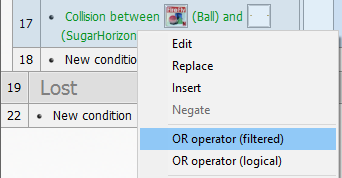
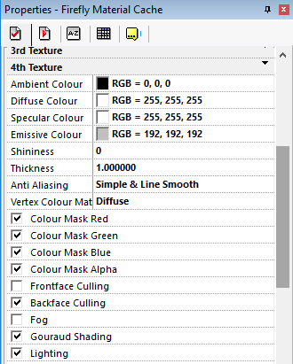

|
We have the walls we have the player all we need now is a ball and then some bricks so first the ball.By now you should know how to add new objects so add a new Firefly Node - Primitive and rename it Ball |
||
| For the ball settings we are going to introduce a few new things and hopefully some old things too. Set the ball Primitive Type to Sphere and set its Radius to 16 and set its Transpose 2D to Transpose 2dx -> 3dx, 2dy -> 3dz. ok so what did we just do? we told the firefly engine to take its position on the 2d Frame X and Y and transpose them into the 3d world putting them into the X and Z values. if you look at the Properties now you will see that X and Z have been turned off. | ||
| Its also put some very dodgy numbers in there for me (in my case its -308 and 62) yours will be different, so what are these numbers and where did they come from ? Before we look into that set the balls Position Y to 16 to match its radius. | ||
| If like me you have just been dumping your objects anywhere they could be a right mess, as we are now transposing the ball from the Frame we need to tidy up a little bit, move all your icons out the way and into a nice little row across the bottom. then to help us visually lets drag out the images we used from the first chocobreak tutorial, you do remember that right ? Open the "Library" window, on the bottom-left of your display. in the tree, Click on the "Tutorial" folder, Locate the "Chocobreak Tutorial" line and double click on it to open it. drop out some matching images "SugarVertical1", "SugarHorizontal" and "SugarVertical2".
Using the values in the image make yours look like this. |
||
| I'm sure the clever ones amongst you have sussed out that our board is upside down, its important to remember that while the 3d world and the 2d can co-exist you need to ensure the values stay the same, in the 3D world we placed our red top pole at 200 Z which was at the top, as the 2d world has the higher values coming down it has been reversed, we could of placed our 3D camera at +200 Z and that would of then meant we need to place our top pole at -200 so this 2D world would of then matched but then i couldn;t explain all this. If that was really confusing don't worry about it too much, just remember if something is -200 in 2D it will be -200 in 3D aswell. | ||
|
If you click "Run Frame" now, you will see that I sneakily hid the ball behind the waiter so we dont see it until he turns around, also you may noticed that the ball does not move. We could use the Firefly Movement Object but this tutorial is to help show that the 2D world and the 3D world can mix. Just like the 2D objects some Firefly Nodes have movement tabs, so lets assign the ball a movement property to our ball and define how that movement will work in our game. Locate the one called "Movement" Tab and click on it. Locate the line "Type", and click on it. This opens a combo box displaying all the different genres of movement. Select the "Bouncing ball" entry. click on the "Initial direction" and set the dial like this. |
||
 |
||
| For now set the speed to 10, and run the game again. becuase the ball has Transposing on it the ball in the 3d world matches what the ball in the 2D world has done. | ||
| I bet you feel sorry for the waiter as he watches his ball fly away into the distance, hopefully you know that we need to add collision events but also we need the ball to wait until the waiter is ready so set the movement speed down to 0, so the ball waits until we are ready to play. Locate the grid line inside the Waiting group called Upon pressing "Space bar" and the "ball" mesh - be careful as there are a few primitives, select Movement -> Set Speed and enter 10 into the popup. | ||
| Now the ball moves at the right time lets make it bounce off the walls, create a new condition in the Playing section, Select the Ball -> Collisions -> Another object | ||
| In the popup select the "SugarHorizontal" object, we also want to check it against the side walls aswell so right mouse the condition we just made and select OR | ||
|  | ||
| create another collision condition between the ball and "SugarVertical1", insert another OR and another collision with "SugarVertical2". hopefully it looks like this. | ||
| So now we have a condition that will trigger if the ball collides in 2D with any of the poles - locate the grid square where the ball is and choose Movement -> Bounce. give the game a quick check to make sure everything is working as it should. You noticed that the waiter cant hit the ball, you probably also noticed hes in 3D not 2D so how are we going to handle his collision? we will set up the 3D collisions. Collisions in 3D happen between a sphere and a mesh, luckily we just happen to have a sphere and a mesh, so goto the Properties of the ball and tick the Use Collisions box and set the all 3 Radius to 16. | ||
| Now goto the Animated Mesh Properties and turn on his Use Collisions box too, although he doesn't a radius, only the thing doing the checking needs a radius the object being hit just needs collisions turned on. In the Playing section create a new condition this time we will use the 3D collision option which is further down select the ball and choose Has collided with a particular node. | ||
| The popup is asking which Fixed Value should it check for everything in the Firefly World is given a Fixed value its used to make sure we have the correct object this allows us to have 3 balls for example and lets us know exactly what each balls unique value is. so we need to tell this popup that we want the waiter fixed value, so find the Animated Mesh icon and right mouse it and select Retrieve fixed value | ||
| We cant use the movement bounce action this time as that checks which direction in 2d that it hit something. so instead we are just going to send the ball back up at a random angle, we could work out what part of the mesh it hit and then send it back in the correct direction but we just want to keep it simple for this tutorial. locate the ball grid line and click it and select Direction -> Select direction just like at the start select the opposite arrows as our world is upside down. | ||
|
||
| Thats the ball pretty much done, except we never added a material to it and its just a white ball. Can you remember how to add another material to the Material Cache, if not go back to step 10 and refresh your memory. The new material we want to add to the cache should be called Sweetball and Texture1 should be the image called Sweet | ||
| As before at the start of Frame you need to add the event Load Material from cache slot 5. (see step 8 if you forgotten how to do this bit) just like the poles we did before I think we need the Ambient (Shadows) to be 0,0,0 black and the Emmisive colour to be 192,192,192. | ||
 |
||
| If you check the game now you will probably notice the ball looked a bit wierd sliding across the floor rather than rolling, getting a ball rolling using true physics is a bit beyond the level for this tutorial so we will just add some very basic rolling logic which if your feeling upto it later you can expand upon. | ||
| Right Click the grid where the Ball and Always meet and select Node Properties -> Rotation -> Set Rotation, we are simply just going to rotate the ball based on where on the floor the ball is, so for the X angle we need the Z position of the Ball, click the ball and choose Node Properties -> Position -> Get Z Coordinate | ||
| Although that will rotate the ball its a bit slow so lets make it a bit faster by multiplying it by 5 make the text read "ZPosition( "Ball" ) * 5", for the Y value leave it at 0 and for the Z value we need the X Position so click the ball again and choose Node Properties -> Position -> Get X Coordinate then change the text to read 0 - XPosition( "Ball" ) * 2 | ||
| It doesnt look very realistic when we run it but i think its better than it sliding along. | ||
{kind=link}
{kind=link}
{kind=link}